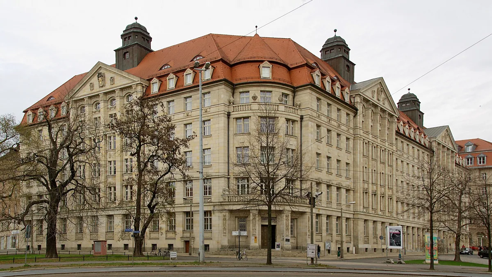
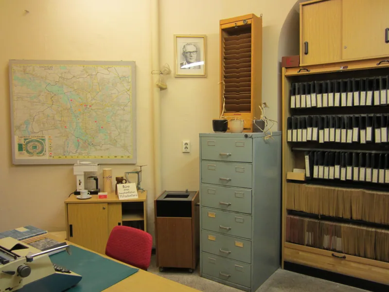
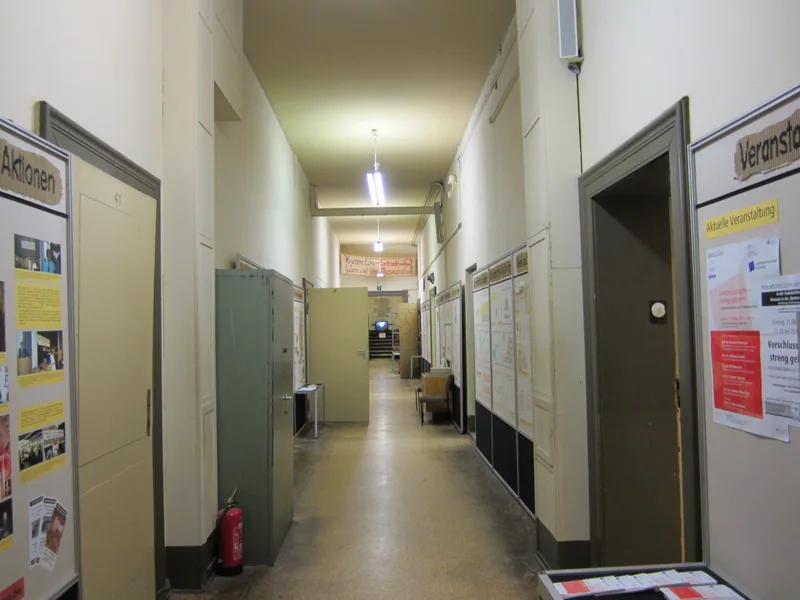
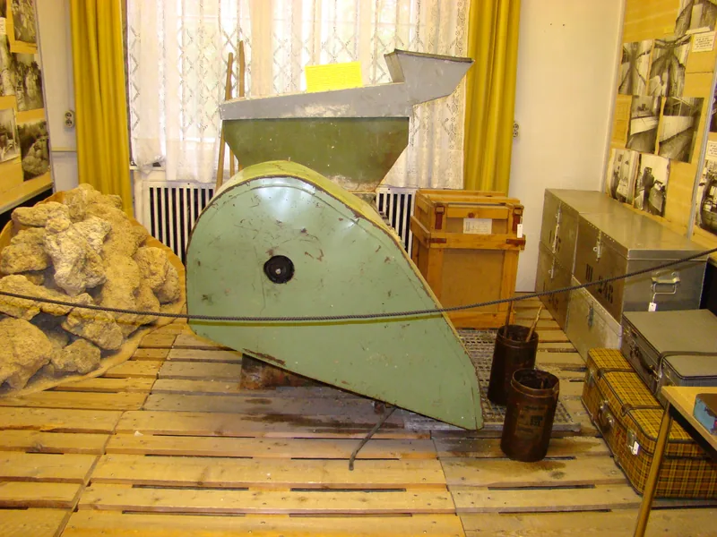
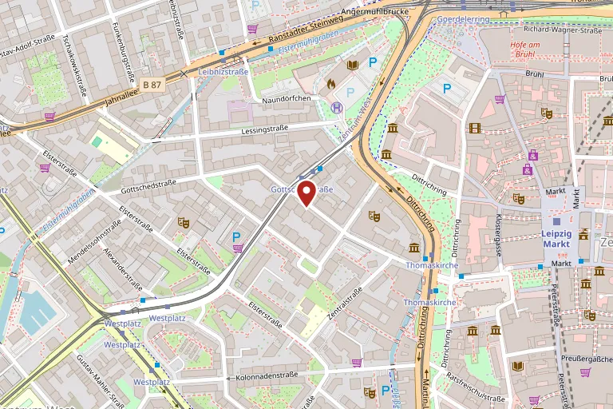

Museum in der Runden Ecke
Am Dittrichring in Leipzig, im früheren Sitz der Stasi-Bezirksverwaltung: eine Ausstellung an dem Ort, an dem die Überwachung geplant wurde — und an dem sie 1989 endete.
Ein Ort der Friedlichen Revolution
Von 1950 bis 1989 saß in dem Gebäude am Dittrichring, wegen seiner abgerundeten Ecke im Volksmund „Runde Ecke“ genannt, die Bezirksverwaltung für Staatssicherheit Leipzig. Von hier aus wurde die Überwachung der Menschen in der Region organisiert.
Am Abend des 4. Dezember 1989 besetzten Bürgerinnen und Bürger im Zuge der Montagsdemonstrationen das Haus und sicherten die Akten vor der Vernichtung. Seit August 1990 zeigt das Bürgerkomitee Leipzig hier eine Ausstellung — an authentischem Ort, in weitgehend erhaltenen Räumen.

Stasi – Macht und Banalität
Die Dauerausstellung „Stasi – Macht und Banalität“ führt durch die früheren Diensträume und zeigt, mit welchen Mitteln das Ministerium für Staatssicherheit arbeitete: Postkontrolle, Abhörtechnik, Verkleidungen und die berüchtigten Geruchsproben.
Vieles davon steht am Originalschauplatz — die Nüchternheit der Büros und Flure ist Teil der Aussage. Ein Audioguide führt in mehreren Sprachen durch die Ausstellung.

Einblicke
Räume, Objekte und Gebäude — aufgenommen im und am Haus.
-

Geruchsproben aus dem Bestand der Staatssicherheit -

Nachgestelltes Büro eines hauptamtlichen Mitarbeiters -

Flur in den erhaltenen Diensträumen -

Ausstellungsstück im früheren Diensttrakt -

Kamera-Installation am Dittrichring
Öffnungszeiten
| Täglich | 10 bis 18 Uhr |
|---|
Stand: Juli 2026. Bitte vor dem Besuch beim Haus bestätigen lassen.
Gut zu wissen
- Die historische Ausstellung ist ohne Anmeldung zugänglich.
- Zusätzlich bietet das Bürgerkomitee Führungen an, darunter samstags um 16 Uhr den Rundgang „Stasi intern“ durch das Haus.
Eintritt
| Karte | Preis |
|---|---|
| Erwachsene | 5,00 € |
| Ermäßigt | 4,00 € |
- Der Eintritt schließt einen Audioguide in deutscher, englischer, französischer, spanischer, italienischer, niederländischer, polnischer und arabischer Sprache ein.
Preisstand: Juli 2026.
Anfahrt
Anschrift
Dittrichring 24
04109 Leipzig
Mit Bus und Straßenbahn
Die „Runde Ecke“ liegt am westlichen Innenstadtring, wenige Minuten von der Thomaskirche und dem Marktplatz. Haltestellen der Straßenbahn und des Busses befinden sich am Goerdelerring in unmittelbarer Nähe.
Zu Fuß aus der Innenstadt
Vom Markt sind es rund zehn Gehminuten über den Thomaskirchhof zum Dittrichring.

Kontakt
Fragen zum Besuch, zu Führungen oder zur Barrierefreiheit beantwortet das Bürgerkomitee Leipzig.
- Träger
- Bürgerkomitee Leipzig e.V. für die Auflösung der ehemaligen Staatssicherheit (MfS)
- Telefon
- +49 341 9612443
- mail@runde-ecke-leipzig.de
- Im Netz
- www.runde-ecke-leipzig.de